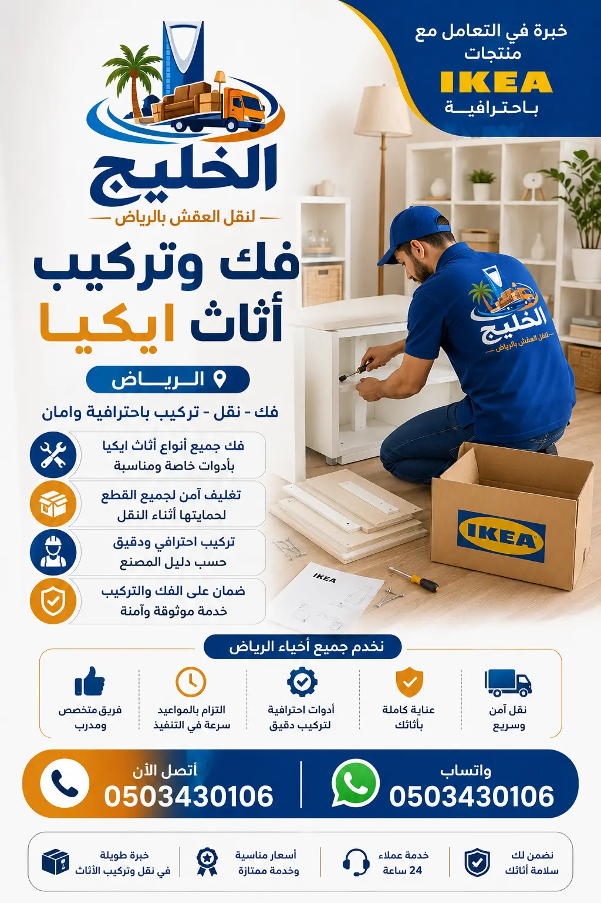
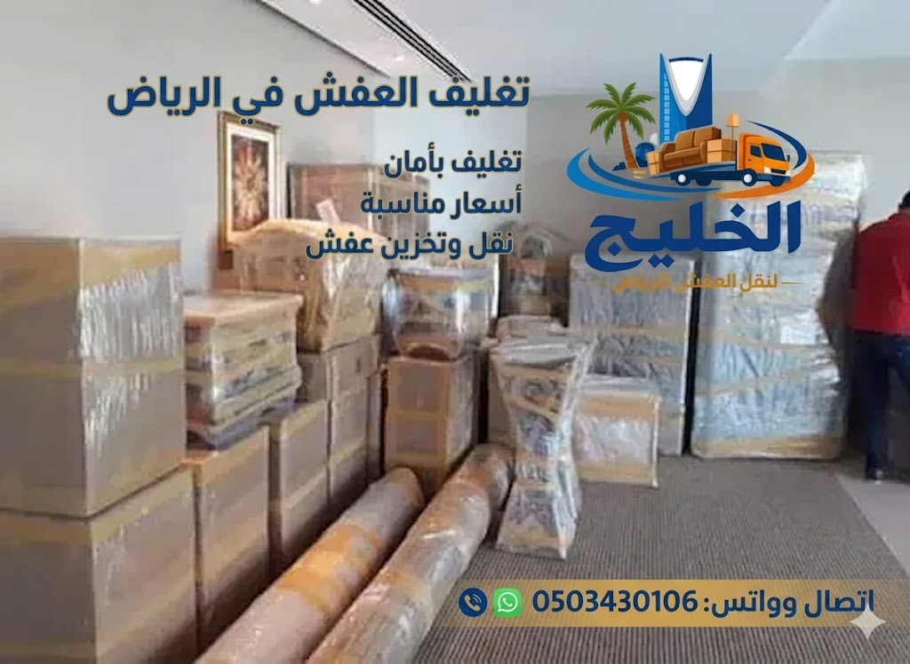

نقدم خدمة فك وتركيب أثاث ايكيا بالرياض بأعلى مستويات الاحترافية. سواء كنت بحاجة إلى تركيب أثاث ايكيا جديد أو فك ونقل أثاثك القديم، فإن فريقنا المدرب على جميع قطع ايكيا يضمن لك نتيجة مثالية. شركة نقل عفش بالرياض الرائدة تقدم لك خدمة متخصصة في أثاث ايكيا. اتصل بنا اليوم للحصول على عرض سعر مجاني وفوري.
يتميز أثاث ايكيا بتصميماته العصرية وجودته العالية، لكنه يحتاج إلى خبرة خاصة أثناء الفك والتركيب. فك وتركيب أثاث ايكيا بالرياض يحتاج إلى فنيين مدربين على فهم نظام التركيب المعقد الذي يعتمد على قطع متعددة ومسامير دقيقة. شركة الخليج لنقل العفش توفر لك فريقاً متخصصاً في تركيب جميع قطع ايكيا، بدءاً من غرف النوم والأسرة، مروراً بخزائن الملابس والمكاتب، وصولاً إلى مطابخ ايكيا المتكاملة. نحن ندرك أن تركيب أثاث ايكيا بشكل خاطئ قد يؤدي إلى تلف القطع أو عدم استقرارها، مما يشكل خطراً على أفراد الأسرة. لذلك، نحرص على أن يكون جميع فنيينا حاصلين على تدريب مكثف على كل موديلات ايكيا. نقل الأثاث بالرياض يحتاج إلى فك احترافي أولاً، ونحن نضمن لك ذلك. أيضاً، يمكنك الاستفادة من خدمات تغليف الأثاث بالرياض التي نقدمها لحماية قطع ايكيا أثناء النقل. وإذا كنت بحاجة إلى تخزين الأثاث في الرياض لفترة مؤقتة، فإن لدينا مستودعات مجهزة. أفضل شركات نقل العفش بالرياض تضع خبرتها في خدمتك.
تعتبر عملية فك وتركيب أثاث ايكيا بالرياض من أكثر الخدمات طلباً، خاصة مع الإقبال الكبير على شراء أثاث ايكيا في المملكة. يتميز أثاث ايكيا بأنه عملي وسهل النقل عند فكه بشكل صحيح، لكنه قد يتعرض للتلف إذا تم الفك باستخدام أدوات غير مناسبة أو بقوة مفرطة. فريقنا يستخدم أدوات خاصة مصممة لفك وتركيب ايكيا، ويحتفظ بكل المسامير والأجزاء الصغيرة في أكياس مرقمة لتسهيل إعادة التركيب. خدمة فك وتركيب غرف النوم التي نقدمها تشمل جميع قطع ايكيا. كما أننا ننصح عملاءنا بقراءة نصائح مهمة قبل نقل العفش للاستعداد الأمثل لعملية النقل والتركيب. فك وتركيب العفش في الرياض هو تخصصنا، ونحن نفخر بسمعتنا كأفضل مقدم لهذه الخدمة.
لضمان الحصول على أفضل نتيجة، نوصي بالاستعانة بفريق متخصص مثل فريقنا في شركة نقل عفش بالرياض. أفضل شركة نقل عفش الرياض تقدم لك ضماناً على جميع أعمال الفك والتركيب. كما يمكنك الاطلاع على دليل شركات نقل العفش بالرياض لتتعرف على مكانتنا الريادية في هذا المجال. لا تتردد في الاتصال بنا لحجز موعد مع فني متخصص في تركيب أثاث ايكيا بالرياض.


الكثيرون يظنون أن تركيب أثاث ايكيا مهمة سهلة يمكن لأي شخص القيام بها باتباع التعليمات. لكن الحقيقة أن أخطاء تركيب ايكيا شائعة جداً وتؤدي إلى تلف القطع أو عدم استقرار الأثاث. فك وتركيب أثاث ايكيا بالرياض يحتاج إلى فني محترف يعرف أنواع المسامير المختلفة، وترتيب قطع التجميع، والأدوات المناسبة لكل قطعة. الأخطاء الشائعة عند نقل العفش تشمل الفك الخاطئ الذي يؤدي إلى فقدان بعض القطع. نحن نضمن لك فكاً منظمًا وتركيباً دقيقاً. إضافة إلى ذلك، كيفية حماية الأثاث أثناء النقل تبدأ بالفك السليم والتغليف الجيد. فريقنا يستخدم أفضل مواد تغليف الأثاث لحماية قطع ايكيا من الخدوش والكسر. إذا كنت تخطط لنقل أثاث ايكيا الخاص بك، فإننا ننصح بالاستعانة بنا لضمان الوصول السليم.
أيضاً، أثاث ايكيا غالباً ما يأتي بضمان محدود، وأي تركيب خاطئ يؤدي إلى إلغاء هذا الضمان. لذا، من الأفضل تركيب أثاث ايكيا بواسطة فنيين معتمدين مثل فريقنا. أرخص شركة نقل عفش بالرياض تقدم لك أسعاراً تنافسية مع أعلى مستويات الاحترافية والدقة في التركيب والنقل لجميع قطع أثاثك.
نقدم في شركة الخليج لنقل العفش مجموعة شاملة من خدمات فك وتركيب أثاث ايكيا بالرياض. تشمل خدماتنا: تركيب غرف نوم ايكيا (أسرة، كومودينو، تسريحات)، تركيب دواليب ايكيا (بجميع أنواعها وموديلاتها)، تركيب مطابخ ايكيا (خزائن علوية وسفلية، أدراج، أجهزة مدمجة)، تركيب أرائك ايكيا ومقاعد، تركيب مكاتب ورفوف جدارية، وفك جميع هذه القطع بشكل آمن ومنظم. فريقنا لديه خبرة في التعامل مع جميع موديلات ايكيا الحديثة والكلاسيكية. نستخدم مخططات التجميع الأصلية ونتأكد من أن كل قطعة في مكانها الصحيح. خدمات نقل العفش داخل الرياض التي نقدمها تشمل فك وتركيب ايكيا كحزمة متكاملة. إذا كنت بحاجة إلى نقل أثاث ايكيا بين أحياء الرياض، فإننا نوفر لك دينا نقل عفش بالرياض مجهزة خصيصاً لحماية قطع ايكيا. كما أننا نقدم خدمة نقل المكاتب بالرياض التي تشمل مكاتب ايكيا. خدمتنا متاحة في جميع أحياء الرياض مثل حي العارض، حي حطين، وغيرها.
غرف نوم ايكيا من أكثر القطع شراءً في المملكة، وتتميز بتصاميمها العصرية وتعدد استخداماتها. لكن فك وتركيب غرف نوم ايكيا بالرياض يحتاج إلى دقة متناهية، خاصة الأسرة ذات الأدراج أو الأسرة المرتفعة. فريقنا متخصص في فك وتركيب جميع أنواع أسرة ايكيا (MALM، HEMNES، BRIMNES، وغيرها)، بالإضافة إلى خزائن الملابس والكومودينو والتسريحات. نقوم بفك الغرفة بالكامل، وتغليف الأجزاء الزجاجية والمرايا باستخدام مواد تغليف احترافية، ثم ننقلها إلى المنزل الجديد ونعيد تركيبها بدقة. نحرص على أن تكون جميع المسامير والأجزاء الصغيرة مرقمة ومصنفة لتسهيل عملية إعادة التركيب. إذا كنت بحاجة إلى خدمة متخصصة لفك وتركيب غرف النوم، فإننا الخيار الأمثل. دليل أحياء الرياض لنقل العفش يوضح المناطق التي نغطيها.
مطابخ ايكيا تعتبر من أكثر المطابخ العملية والجميلة، لكن تركيبها يحتاج إلى فنيين ذوي خبرة عالية بسبب تعقيد نظام التعليق والخزائن المتعددة. فك وتركيب مطابخ ايكيا بالرياض يتطلب فهم آلية تركيب القضبان الحديدية (الريل)، وتثبيت الخزائن بشكل متساوٍ، وربط الأدراج والمفصلات بدقة. فريقنا يمتلك الخبرة الكافية لتركيب مطابخ ايكيا بجميع موديلاتها (METOD، SEKTION، وغيرها). نقوم أيضاً بفك المطابخ القديمة وتغليفها ونقلها وتركيبها في المنزل الجديد. إذا كنت تخطط لتجديد مطبخك، يمكننا مساعدتك في فك المطبخ القديم وتخزينه مؤقتاً في مستودعات تخزين الأثاث بالرياض. أفضل شركة تخزين عفش بالرياض تتعاون معنا لتوفير هذه الخدمة.
دواليب ايكيا مثل سلسلة PAX وMALM وBRIMNES من أكثر الدواليب شهرة. فك وتركيب دواليب ايكيا بالرياض يحتاج إلى عناية خاصة لأنها غالباً ما تكون كبيرة الحجم وثقيلة الوزن. فريقنا يقوم بفك الدواليب الكبيرة إلى أجزاء صغيرة، وتغليف الأبواب والأرفف الزجاجية، ثم نقلها وتركيبها في الموقع الجديد. نضمن لك أن تعود دواليب ايكيا كما كانت تماماً بدون أي خدوش أو تلف. شركة تخزين عفش بالرياض يمكنها تخزين دواليب ايكيا إذا كنت بحاجة إلى ذلك لفترة. كما ننصح بقراءة أفضل طرق تغليف الأثاث لمعرفة كيف نحمي دواليبك أثناء النقل.
عملية فك وتركيب أثاث ايكيا بالرياض مع شركة الخليج تتبع خطوات منظمة تضمن أفضل النتائج. الخطوة الأولى: الاتصال بنا على 0503430106 لتحديد موعد المعاينة المجانية. الخطوة الثانية: يزور فريقنا منزلك لتقييم كمية ونوع أثاث ايكيا وتحديد الأدوات والمواد المطلوبة. الخطوة الثالثة: نرسل لك عرض سعر شفاف ونهائي. الخطوة الرابعة: في اليوم المحدد، يصل فريقنا مع جميع الأدوات اللازمة، ويبدأ بعملية الفك المنظم مع وضع ملصقات على كل قطعة. الخطوة الخامسة: تغليف القطع الحساسة باستخدام خدمات تغليف الأثاث. الخطوة السادسة: تحميل القطع في سيارات نقل العفش بالرياض المجهزة. الخطوة السابعة: النقل إلى المنزل الجديد. الخطوة الثامنة: التفريغ وإعادة التركيب بدقة وفق مخططات ايكيا الأصلية. هذه الخطوات تجعلنا أفضل شركة نقل عفش بالرياض في مجال فك وتركيب ايكيا.
التغليف الجيد هو نصف عملية النقل الناجحة. نستخدم في شركة الخليج لنقل العفش أفضل مواد تغليف الأثاث لضمان حماية قطع ايكيا الخاصة بك. نستخدم الفقاقيع الهوائية (بابل راب) للأجزاء الزجاجية والمرايا، والكراتين المقواة للقطع الصغيرة، والزوايا الكرتونية لحماية حواف الخشب. كما نستخدم الأغطية البلاستيكية المقاومة للماء لحماية الأثاث من الغبار والرطوبة. خدمات تغليف الأثاث بالرياض التي نقدمها تشمل تغليف جميع قطع ايكيا سواء كانت مفككة أو مجمعة. التغليف الجيد يمنع الخدوش والكسر أثناء النقل، ويضمن لك وصول أثاث ايكيا بحالة ممتازة. كيفية حماية الأثاث أثناء النقل هي أولويتنا القصوى.
إذا كنت بحاجة إلى تخزين أثاث ايكيا الخاص بك لفترة مؤقتة أثناء الانتقال أو التجديد، فإننا نوفر لك خدمات تخزين الأثاث في الرياض بأعلى معايير الأمان. مستودعاتنا مجهزة بأنظمة تكييف للتحكم في الرطوبة ودرجة الحرارة، مما يحمي أثاث ايكيا الخشبي من التمدد أو الانكماش. كما أن المستودعات مراقبة بكاميرات 24 ساعة ومؤمنة ضد الحريق والسرقة. يمكنك تخزين قطع ايكيا سواء كانت مفككة أو مجمعة. أفضل شركة تخزين عفش بالرياض تتعاون معنا لتوفير هذه الخدمة بأسعار تنافسية. شركة تخزين عفش بالرياض موثوقة تضمن سلامة ممتلكاتك.
نخدم جميع أحياء الرياض بأسطولنا المجهز وفريقنا المدرب. تشمل قائمة الأحياء: حي العليا، حي الخليج، حي النرجس، حي الياسمين، حي الروضة، حي النسيم، حي الربيع، حي الملقا، حي الصحافة، حي حطين، حي العارض، وغيرها من الأحياء. فك وتركيب أثاث ايكيا شمال الرياض أو شرق الرياض أو غربه متاح بنفس الجودة والسرعة. دليل أحياء الرياض لنقل العفش يساعدك في التعرف على نطاق تغطيتنا.
| الخدمة | السعر (ريال) | ملاحظات |
|---|---|---|
| تركيب سرير ايكيا مفرد | 100 - 150 | يشمل فك من موقع آخر |
| تركيب غرفة نوم ايكيا كاملة | 300 - 500 | سرير + دولاب + تسريحة |
| تركيب مطبخ ايكيا | 400 - 700 | حسب عدد الخزائن |
| فك وتركيب دولاب ايكيا كبير | 150 - 250 | موديل PAX |
| فك وتركيب حزمة كاملة (شقة) | 600 - 1200 | جميع قطع ايكيا |
تختلف الأسعار حسب عدد القطع وحجمها ومدى تعقيد التركيب. نقدم أسعاراً تنافسية مقارنة بباقي شركات نقل العفش بالرياض. أرخص شركة نقل عفش بالرياض لا تعني جودة أقل، فنحن نضمن لك الجودة مع أفضل سعر. اتصل بنا للحصول على عرض سعر دقيق ومجاني.
هناك أسباب عديدة تجعل شركة الخليج لنقل العفش الخيار الأول لخدمة فك وتركيب أثاث ايكيا بالرياض. أولاً: خبرة تزيد عن 15 عاماً في التعامل مع أثاث ايكيا. ثانياً: فريق مدرب على أعلى مستوى ومعتمد في تركيب ايكيا. ثالثاً: نستخدم أدوات خاصة بأثاث ايكيا. رابعاً: نقدم ضماناً على جميع أعمال الفك والتركيب. خامساً: أسعارنا تنافسية وشفافة بدون رسوم خفية. سادساً: نخدم جميع أحياء الرياض. سابعاً: نقدم خدمات إضافية مثل نقل فلل بالرياض ونقل مكاتب. ثامناً: سياراتنا مجهزة بأحدث أنظمة التثبيت. أفضل شركة نقل عفش الرياض تضع ثقتها في خدمتك. شركة نقل عفش بالرياض التي تثق بها آلاف العائلات.
تبدأ أسعار تركيب غرفة نوم ايكيا من 300 ريال وتصل إلى 500 ريال حسب عدد القطع وتعقيد التركيب. تفاصيل الأسعار
نعم، جميع فنيينا مدربون تدريباً مكثفاً على تركيب جميع موديلات ايكيا ولديهم خبرة سنوات. أفضل شركات نقل العفش بالرياض
نعم، لدينا فريق متخصص في فك وتركيب مطابخ ايكيا بأنظمة التعليق والخزائن المختلفة.
نقدم ضماناً لمدة 6 أشهر على جميع أعمال الفك والتركيب ضد أي عيوب في التركيب.
نعم، نستخدم أفضل مواد تغليف الأثاث لحماية قطع ايكيا من الخدوش والكسر. تغليف الأثاث بالرياض
تستغرق من ساعة إلى ساعتين حسب تعقيد القطع.
نعم، نخدم حي العارض وجميع أحياء الرياض. دليل أحياء الرياض
نعم، نوفر تخزين الأثاث في الرياض بمستودعات مجهزة. أفضل شركة تخزين عفش بالرياض
نعم، لدينا خبرة كبيرة في فك وتركيب دواليب PAX الكبيرة.
نعم، لدينا خدمة نقل المكاتب بالرياض التي تشمل فك وتركيب مكاتب ايكيا.
تحدد الأسعار حسب عدد القطع وحجمها ومدى تعقيد التركيب والمسافة.
اتصل بنا على 0503430106 أو عبر الواتساب، وسنرسل لك عرض سعر فوري ومجاني.
نعم، لدينا خبرة في فك وتركيب جميع موديلات ايكيا القديمة والجديدة.
نعم، نقدم عروضاً خاصة على الحزم المتكاملة. اتصل بنا لمعرفة التفاصيل.
بفضل خبرتنا الطويلة، فريقنا المدرب، أدواتنا الخاصة، أسعارنا التنافسية، وضماننا الشامل. أفضل شركة نقل عفش الرياض
فريقنا جاهز لخدمتك على مدار الساعة. اتصل الآن واحصل على عرض خاص على أول خدمة تركيب.
اتصل بنا 0503430106